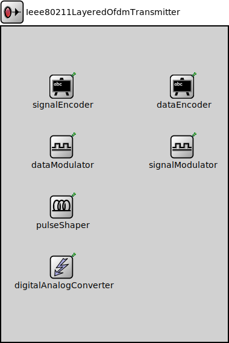

Package: inet.physicallayer.wireless.ieee80211.bitlevel
Ieee80211LayeredOfdmTransmitter
compound moduleThe level of detail parameter determines which submodules of the transmitter will be used:
| Level (domain) | Submodules |
|---|---|
| PACKET | - |
| BIT | signal encoder, data encoder |
| SYMBOL | signal modulator, data modulator + bit level modules |
| SAMPLE | pulse shaper + bit, symbol level modules + (digital/analog converter) |
Important: We have no default module implementation for sample level features.
Note that if a digital/analog converter is provided for the transmitter then it will be only used at sample level, otherwise, since analog representation is obligatory, a simplified, built-in (scalar) analog model is used at all levels.
Note that in non-compliant mode, whatever the level of detail is, you must always set all submodules. If the current level of detail does not demand a specific submodule it is necessary and sufficient to implement those methods of that submodule which provide metadata about its settings.
For example, if the level of detail is bit level, you don't have to implement a complete modulator, it is enough to implement a dummy modulator that can give information about its subcarrier modulation (e.g. BPSK).
Usage diagram
The following diagram shows usage relationships between types. Unresolved types are missing from the diagram.
Inheritance diagram
The following diagram shows inheritance relationships for this type. Unresolved types are missing from the diagram.
Parameters
| Name | Type | Default value | Description |
|---|---|---|---|
| isCompliant | bool | true | |
| levelOfDetail | string | "symbol" | |
| channelSpacing | double | nan Hz | |
| power | double | ||
| centerFrequency | double | ||
| bandwidth | double |
Properties
| Name | Value | Description |
|---|---|---|
| class | Ieee80211LayeredOfdmTransmitter | |
| display | i=block/tx |
Source code
// The level of detail parameter determines which submodules of // the transmitter will be used: // // <table border="1"> // <tr> <th>Level (domain)</th> <th>Submodules</th> </tr> // <tr> <td>PACKET</td> <td>-</td> </tr> // <tr> <td>BIT</td> <td>signal encoder, data encoder</td> </tr> // <tr> <td>SYMBOL</td> <td>signal modulator, data modulator + bit level modules</td> </tr> // <tr> <td>SAMPLE</td> <td>pulse shaper + bit, symbol level modules + (digital/analog converter)</td> </tr> // </table> // // Important: We have no default module implementation for sample level // features. // // Note that if a digital/analog converter is provided for the // transmitter then it will be only used at sample level, otherwise, // since analog representation is obligatory, a simplified, built-in // (scalar) analog model is used at all levels. // // Note that in non-compliant mode, whatever the level of detail is, // you must always set all submodules. If the current level of detail // does not demand a specific submodule it is necessary and sufficient // to implement those methods of that submodule which provide metadata // about its settings. // // For example, if the level of detail is bit level, you don't have to // implement a complete modulator, it is enough to implement a dummy // modulator that can give information about its subcarrier modulation // (e.g. BPSK). // module Ieee80211LayeredOfdmTransmitter like ITransmitter { parameters: bool isCompliant = default(true); string levelOfDetail @enum("packet","bit","symbol","sample") = default("symbol"); double channelSpacing @unit(Hz) = default(nan Hz); double power @unit(W); double centerFrequency @unit(Hz); double bandwidth @unit(Hz); @class(Ieee80211LayeredOfdmTransmitter); @display("i=block/tx"); submodules: signalEncoder: <default("")> like IEncoder if typename != "" { @display("p=100,100"); } dataEncoder: <default("")> like IEncoder if typename != "" { @display("p=300,100"); } dataModulator: <default("")> like IModulator if typename != "" { @display("p=100,200"); } signalModulator: <default("")> like IModulator if typename != "" { @display("p=300,200"); } pulseShaper: <default("")> like IPulseShaper if typename != "" { @display("p=100,300"); } digitalAnalogConverter: <default("")> like IDigitalAnalogConverter if typename != "" { @display("p=100,400"); } }File: src/inet/physicallayer/wireless/ieee80211/bitlevel/Ieee80211LayeredOfdmTransmitter.ned
 This documentation is released under the Creative Commons license
This documentation is released under the Creative Commons license